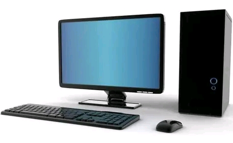

Introduction to Computer
The word Computer is derivered from the word Compute. Compute means to calculate. Computer originally was
defined as a super calculator. It has the capacity to solve the complex arithmetic and scientific problems at very high speed.
But nowadays in addition to handling complex arithmetic computations, Computer perferm many tasks like accepting, sorting, selecting
and comparing various type of informations. They also perform arithmetic and logical operations on alphabetic, numeric and other type of informations
Therefore Computer is an electronic device, oparating under the control of instructions stored in instructions
in its own memory, that can accept data(input), process them according to specified rules, produce(output) and store
the results(storage) for future use.

Read more>>>
MS Word
Microsoft Word is among the Microsoft office application used to make and edit documents such as letters, reports, resumes and run spell-checks on writting.
Some of the features of MS Word are as follows:

Microsoft Word is more easily to learn and understand as long as you practice more
Get started>>>